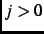

I use the Hermite polynomial series to estimate the NAIRU. The Hermite series is often used to implement cubic splines (de Boor 1978). Hermite polynomials form one of the families of classical orthogonal polynomials (Szegö 1975). The variance-covariance matrix is often well-conditioned (Hinich and Roll 1981). The Hermite polynomials may be defined for  by the recurrence relation
A few Hermite polynomials are listed below. Note how quickly the polynomials increase in size. This is one of the reasons why the parameters associated with the polynomials are extremely difficult to interpret.